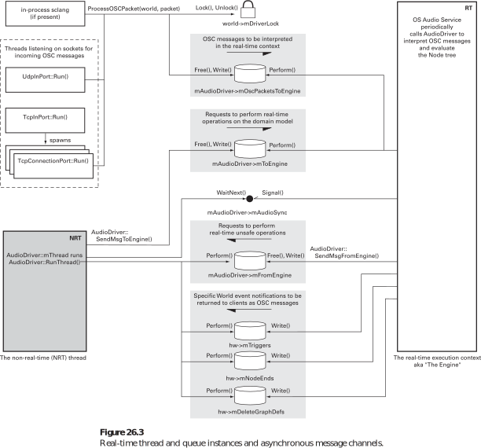

Real-time audio programming
time waits for nothing
Daniel Appelt / 2016-11-15
It all started...
...while I was searching for a new MIDI sequencer
Suddenly, I found myself debugging software and reviewing it's code. I was impressed by how complicated some implementations could get.
Preliminary conclusions
- I have to write my own Jack MIDI sequencer
- A Jack MIDI application is just a regular Jack application
Which programming language?
time waits for nothing
by Ross Bencina (author of AudioMulch)
Three guiding principles
- You don't want your audio to glitch
- Real-time waits for nothing
- Paranoia is justified
Things to avoid
- Memory (de)allocation
- Locking a mutex (see priority inversion)
- Performing (disk) I/O
- Calling OS functions that may block
- Calling code with unpredictable or poor worst-case time complexity
- Calling code that does or may do any of the above
- Calling code that you don't trust to be compliant
Things to do
- Use algorithms with good worst-case time complexity
- Spread heavy computations across samples / callbacks
- Pre-allocate or pre-compute data in NRT thread
- Employ non-shared, audio-callback-only data structures
Huh?
- Real-time audio programming is not easy
- Best-practices for concurrent programming don't apply
- Avoid GC and other unpredictable run-time libraries
- Use lock-free FIFO queues to communicate with RT thread
Supercollider as best-practice example
- Client-server software for live coding and much more
- Ross Bencina provides valuable insights
- It's fifo queue is a good starting point to dive into it's code
Supercollider communication

Conclusions
- You better know what you do
- Maybe it's better to just add a GUI to an existing engine
- For the brave: Rust should be a nice alternative to C/C++